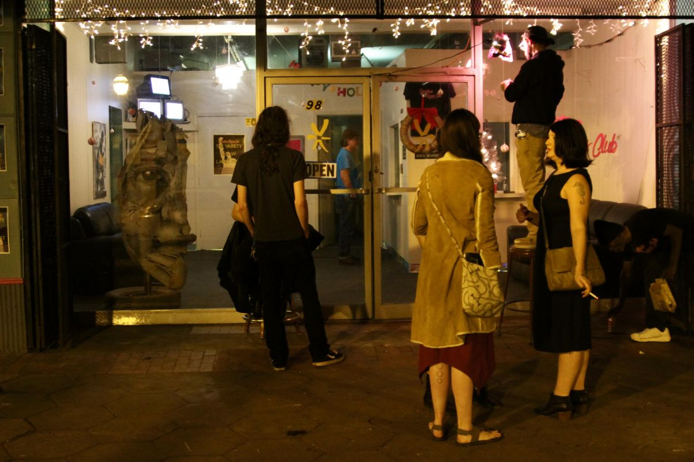
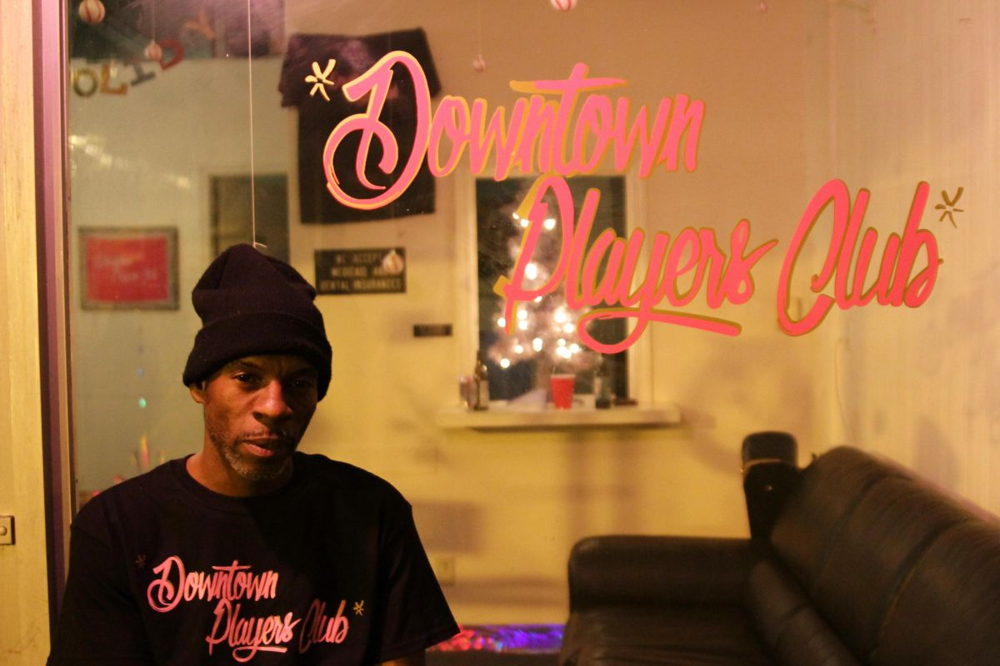
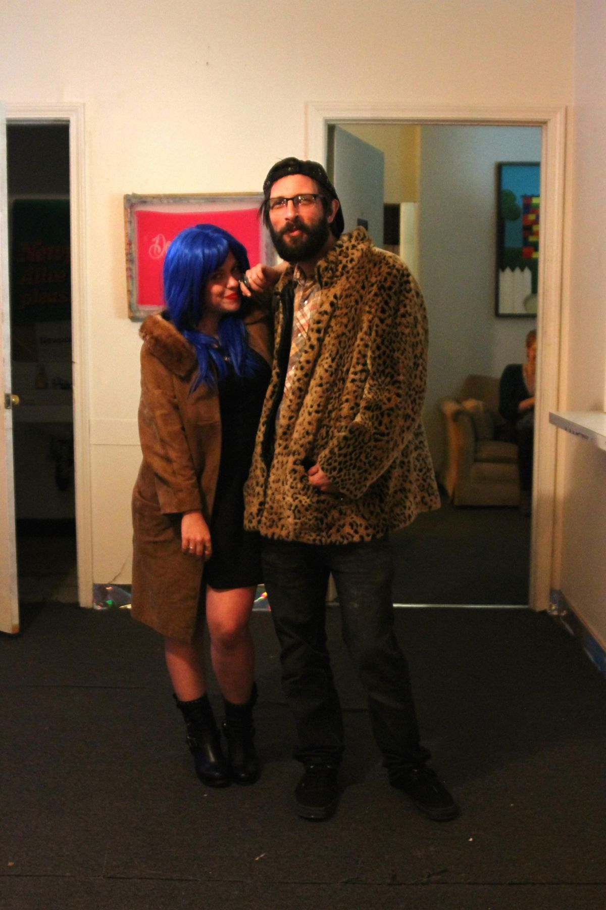
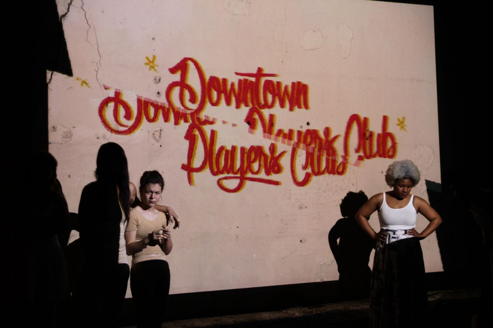
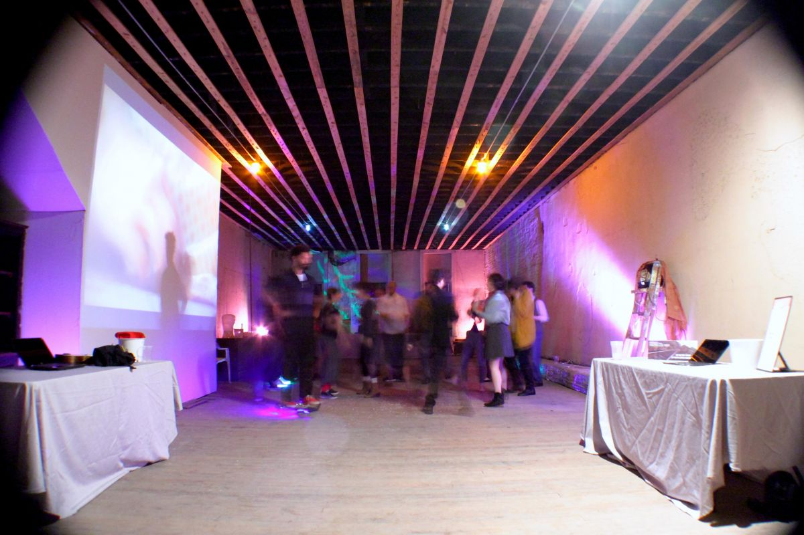
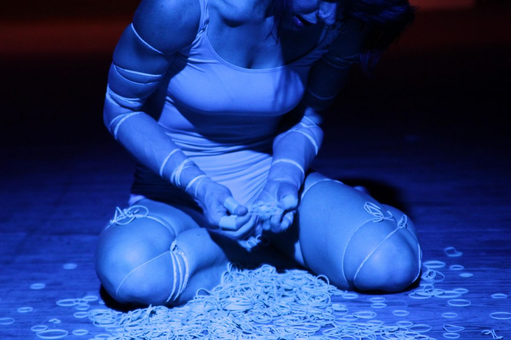
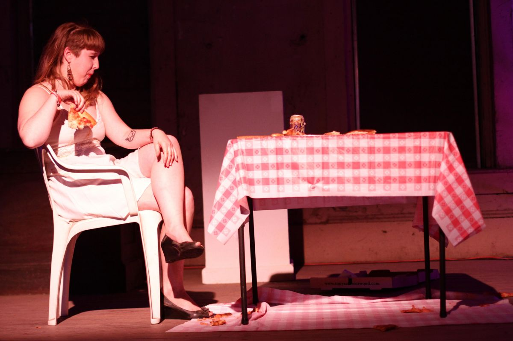
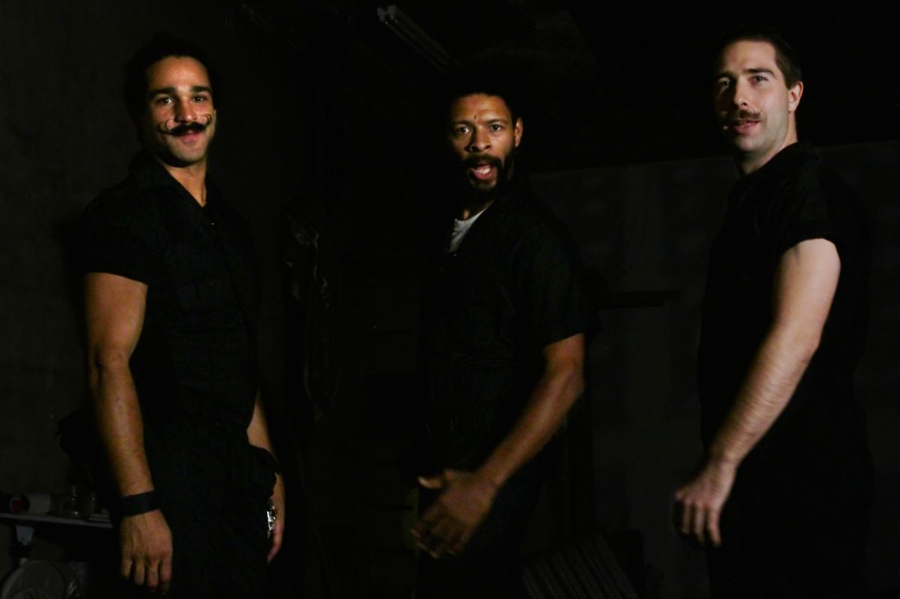

Exhibitions / festivals / cultural programming
Curatorial work
Curatorial practice across public space, digital culture, artist infrastructure, and experimental exhibition formats.
Espronceda / Immensiva / NUBIA Labs programs
Program direction, curatorial development, and moving-image documentation connected to Espronceda Institute of Art & Culture, IMMENSIVA, and NUBIA Labs.
The Edge of Art
A program and platform connected to a t l a s t, focused on emerging intersections of art, technology, new media, and experimental cultural production.
This context aligns with curatorial work around artists, hybrid formats, digital practices, and future-facing cultural discourse.
Underground Atlanta (2020–2022)
As Creative Director of Underground Atlanta, Pilcher helped transform one of the city's most storied sites into a live platform for art, culture, and experimentation.
Within the first six months, the initiative brought more than 100,000 visitors back to the site and helped re-establish Underground as a destination for performance, installation, music, and public-facing cultural programming.
He launched the Underground Roots Program, offering rent-free studios and storefronts to more than 70 artists, curators, musicians, and creative entrepreneurs.
The work helped attract more than $40 million in investment, develop international partnerships, and turn forgotten tunnels and storefronts into active cultural infrastructure.
Atlanta Digital Art Week
A citywide celebration of digital art and culture featuring more than 75 international artists, immersive installations, workshops, talks, and public programming across Underground Atlanta.
Museum of the Moon
A lunar installation built around work by Luke Jerram alongside Marseille-based artists Mr. Difuz and Etienne Rey, presented as part of Elevate Atlanta with Villa Albertine and La Friche la Belle de Mai.


Downtown & Midtown Players Clubs
Downtown Players Club and Midtown Players Club were artist-run incubation spaces built around performance, rehearsal, experimentation, and grassroots cultural infrastructure in Atlanta.
Downtown Players Club, co-founded with Elizabeth Jarrett, occupied a 28,000-square-foot building at 98 Broad Street in South Downtown. It functioned as a clubhouse for creatives — a venue for writers, performers, rehearsals, screenings, variety shows, and one-off events — while also participating in the wider South Broad Street effort to build a homegrown arts district from neglected commercial space.
Midtown Players Club extended that model into Colony Square through Hambidge's Creative Hive project, bringing artist activity, site-specific performance, and experimental programming into a high-traffic mixed-use environment in Midtown.
Together, the two spaces were less conventional venues than living prototypes for what artist-centered urban infrastructure could be: affordable, flexible, community-facing, and deeply tied to the social life of the city.








NUBIA: Metaverses, NFTs, and New Realities
As co-curator of the NUBIA Project at Espronceda Institute of Art and Culture, Pilcher helped lead exhibitions, artist training, and research around blockchain, XR technologies, and new models of creative authorship.
NUBIA brought together immersive environments and digital works by Catalan artists and international guests, while supporting artists with mentorship and early-stage development.
Co-curated with Alejandro Martín.


Digital Divide
An exhibition focused on the aesthetics, systems, and social residue of the digital age — communication, surveillance, networks, and the shifting poetics of connected life.
Selected artists included James Bridle, Nicole Ruggiero, Josh Yoder, Joe Bigley, Nathan Sharratt, Audrey Dakin, and others.


NEM Art Collective (2008–2013)
A collective experiment in site-specific performance, video, and immersive environments that challenged the southern underground art scene from the inside out.
Celebration in the Lair of the Serpent Queen
A performance work of movement, costume, and multimedia created with the NEM collective.
Legends of the Underground
A document of Atlanta's alt-art scenes, performance communities, fashion cultures, and resistant creative networks.